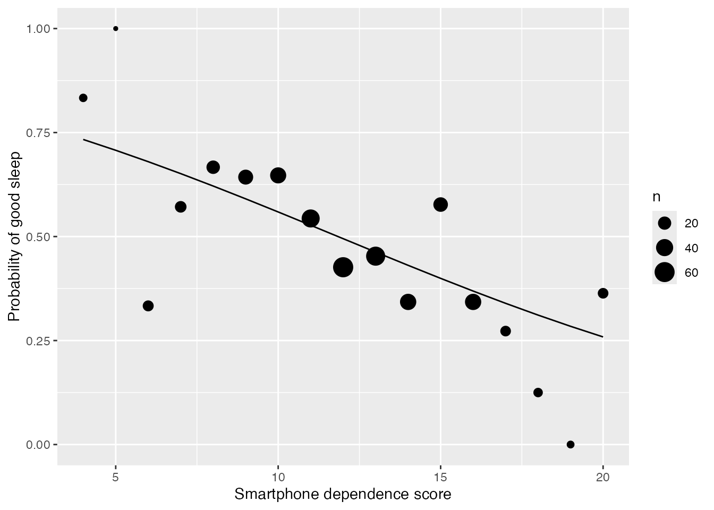
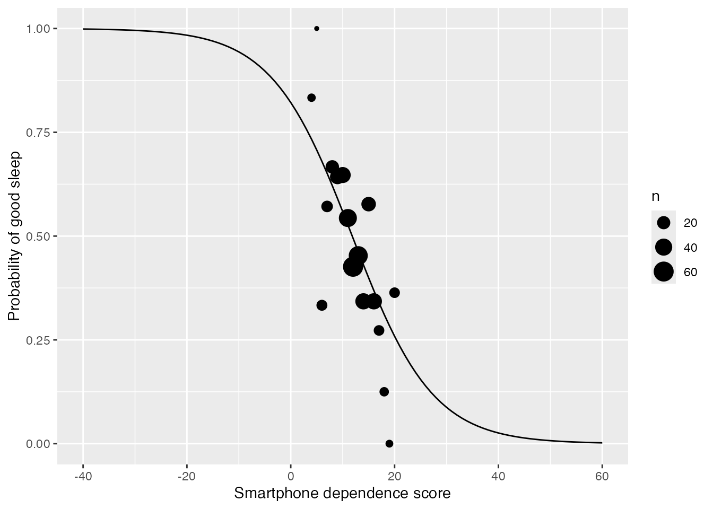

library(dplyr)
library(broom)
library(ggformula)22: Binary Logistic Regression Review
Stat 230 - Spring 2026
Part 1: Read the paper
Q1. Based on your reading, what is the response variable and what are the predictor variables? What does it mean if \(Y=1\)? What about \(Y=0\)?
The response is sleep quality: \(Y = 1\) means good sleep (PSQI of 5 or below) and \(Y = 0\) means poor sleep (PSQI above 5). The predictor of interest is the smartphone dependence score, and the model adjusts for age, BMI, smoking, drinking, and habitual smartphone use before sleep. The authors also fit models with the health behavior (HPLP) scores, but we’ll focus on the model in the top row of Table 2.
Q2. The PSQI is a score from 0 to 21, and the authors cut it into two groups. What do they gain by doing this? What information do they lose?
Gain: a clinically meaningful outcome (good vs. poor sleep), and results that can be reported as odds ratios.
Lose: how poor someone’s sleep is. A student with a PSQI of 6 and a student with a PSQI of 17 are both “poor,” even though their sleep is very different, while students with a PSQI of 5 and 6 land in different groups.
Q3. Write out the model on the log-odds scale, using \(\pi_i\). Say what each \(x\) is. Which \(\beta\) goes with the odds ratio of 0.88 (top row in Table 2)?
\[\log\left(\frac{\pi_i}{1 - \pi_i}\right) = \beta_0 + \beta_1\, \text{dependence}_i + \beta_2\, \text{age}_i + \beta_3\, \text{BMI}_i + \beta_4\, \text{smoking}_i + \beta_5\, \text{drinking}_i + \beta_6\, \text{phone before bed}_i\]
Here \(\pi_i\) is the probability that student \(i\) has good sleep. The odds ratio of 0.88 goes with \(\beta_1\): it estimates \(e^{\beta_1}\).
Q4. Your model doesn’t have an \(\epsilon_i\) in it. Consider two students with exactly the same age, BMI, smoking, drinking, phone use, and dependence score. What does the model say is the same for these two students? Does it say they will have the same sleep quality?
They have the same probability of good sleep, \(\pi_i\) (and so the same odds and log-odds). They won’t necessarily have the same sleep quality: each student’s \(Y_i\) is still a 0 or a 1, drawn from Bernoulli(\(\pi_i\)). The randomness comes from that draw, so we don’t need a separate error term.
Q5. Interpret the odds ratio of 0.88 in context. Why is it below 1? (Careful: which outcome is the model for?)
After accounting for age, BMI, smoking, drinking, and phone use before bed, each 1-point increase in the dependence score is associated with multiplying the odds of good sleep by 0.88 (about 12% lower odds).
It’s below 1 because the model is for good sleep, and students with higher dependence scores are less likely to have good sleep. If the model were for poor sleep instead, the odds ratio would be \(1/0.88 =\) 1.14.
Q6. Given the odds ratio is 0.88, what is \(\hat\beta\)? Which predictor goes with this value?
\(\hat\beta = \log(0.88) =\) -0.128. This is the coefficient for the smartphone dependence score, \(\hat\beta_1\).
Part 2: Fit their model
# sleep <- read.csv("https://aluby.github.io/stat230/data/smartphone_sleep.csv")
sleep <- read.csv(here::here("data/smartphone_sleep.csv"))Q7. Fill in the blanks to fit the model you wrote in Q3. Did you get the same \(\hat\beta\) as the paper?
sleep_mod <- glm(good_sleep ~ phone_dependence + age + bmi + smoking + drinking + phone_before_bed,
data = sleep, family = "binomial")
tidy(sleep_mod) |>
mutate(or = exp(estimate),
or_low = exp(estimate - 1.96 * std.error),
or_high = exp(estimate + 1.96 * std.error))# A tibble: 7 × 8
term estimate std.error statistic p.value or or_low or_high
<chr> <dbl> <dbl> <dbl> <dbl> <dbl> <dbl> <dbl>
1 (Intercept) 2.02 1.07 1.89 0.0592 7.56 0.925 61.8
2 phone_dependence -0.129 0.0326 -3.96 0.0000739 0.879 0.825 0.937
3 age 0.00150 0.0319 0.0472 0.962 1.00 0.941 1.07
4 bmi -0.0194 0.0298 -0.651 0.515 0.981 0.925 1.04
5 smoking -1.10 0.846 -1.30 0.195 0.334 0.0638 1.75
6 drinking -1.01 0.832 -1.21 0.227 0.366 0.0716 1.87
7 phone_before_bed -0.132 0.481 -0.274 0.784 0.877 0.341 2.25 Essentially, yes. The paper only reports odds ratios, so we compare to our answer from Q6: we get \(\hat\beta =\) -0.129 and \(\log(0.88) =\) -0.128. Our odds ratio is 0.88 with a 95% CI of (0.82, 0.94), compared to 0.88 (0.83, 0.94) in the paper. The lower limit is off by 0.01.
Part 3: What is the model saying?
sleep_agg <- sleep |>
group_by(phone_dependence) |>
summarize(n = n(),
n_good = sum(good_sleep),
prop_good = n_good / n)
typical <- data.frame(age = 17, bmi = 20, smoking = 0, drinking = 0,
phone_before_bed = 1, phone_dependence = 4:20)
typical <- typical |>
mutate(prob = predict(sleep_mod, newdata = typical, type = "response"))
gf_point(prop_good ~ phone_dependence, size = ~n, data = sleep_agg,
xlab = "Smartphone dependence score", ylab = "Probability of good sleep") |>
gf_line(prob ~ phone_dependence, data = typical, inherit = FALSE)
Q8. Make the aggregated plot in R. Which points should we pay the least attention to, and why? Does the curve describe the overall trend?
The small points at the extremes, like scores of 4, 5, and 19 (6, 3, and 5 students). A proportion based on so few students is noisy. The curve does describe the overall trend: the probability of good sleep decreases as the dependence score increases.
Q9. This curve looks close to a straight line. Change 4:20 to -40:60 in the code above and run it again (those scores don’t exist, but it shows us the math). What shape is it now? Why did it look like a line over the real scores?
typical_wide <- data.frame(age = 17, bmi = 20, smoking = 0, drinking = 0,
phone_before_bed = 1, phone_dependence = -40:60)
typical_wide <- typical_wide |>
mutate(prob = predict(sleep_mod, newdata = typical_wide, type = "response"))
gf_point(prop_good ~ phone_dependence, size = ~n, data = sleep_agg,
xlab = "Smartphone dependence score", ylab = "Probability of good sleep") |>
gf_line(prob ~ phone_dependence, data = typical_wide, inherit = FALSE)
It’s a (decreasing) S-curve. Over the real scores, the probabilities only go from 0.73 to 0.26, which is the middle of the S, where the curve is close to straight.
Q10. Next, let’s look at the fitted model on all three scales for a “typical” student. Each row is 4 points higher than the row before it. Going from one row to the next:
scales <- typical |>
filter(phone_dependence %in% c(8, 12, 16, 20)) |>
mutate(odds = prob / (1 - prob),
log_odds = log(odds)) |>
select(phone_dependence, log_odds, odds, prob)
scales phone_dependence log_odds odds prob
1 8 0.49566112 1.6415832 0.6214391
2 12 -0.02048906 0.9797194 0.4948779
3 16 -0.53663924 0.5847100 0.3689697
4 20 -1.05278943 0.3489630 0.2586898- What do you add to get the next log-odds? Which number in your coefficient table does this come from?
Add -0.516. This is \(4\hat\beta_1 = 4(-0.129)\), from the
phone_dependencecoefficient.
- What do you multiply by to get the next odds?
Multiply by \(e^{4\hat\beta_1} =\) 0.597.
- Is there one number you can add or multiply by to get the next probability?
No. The differences in probability are -0.127, -0.126, and -0.110, and the ratios change too. The change in probability depends on where you start.
Q11. Use predict() to find the predicted probability of good sleep for a typical student with the score you gave yourself in the warm up. Should you believe this number about yourself? Who was in this study?
predict(sleep_mod, newdata = data.frame(age = 17, bmi = 20, smoking = 0, drinking = 0,
phone_before_bed = 1, phone_dependence = 12),
type = "response") 1
0.4948779 The answer depends on your score (a score of 12 is shown here). Be skeptical of this number. It’s an estimated probability for a group of 17-year-olds with these covariate values, and the study only includes female students at one junior college in southern Taiwan, ages 15 to 21. We would be extrapolating to apply it to Carleton students.
Q12. In their results, the authors describe “a greater the degree of smartphone dependence associated with shorter sleep length” (Wang et al., 2019). Does your model support this exact statement? How would you rewrite it?
No. The response in our model is good vs. poor sleep quality (PSQI of 5 or below), not sleep length. A better version: “After accounting for age, BMI, smoking, drinking, and smartphone use before sleep, higher smartphone dependence scores were associated with lower odds of good sleep quality.” This is a cross-sectional study, so we should keep “associated” and not claim that dependence causes poor sleep.
Part 4: Which test answers the question?
Q13. Write the null hypothesis, in terms of the \(\beta\)s in your model, that matches each question:
- After accounting for the other variables, is smartphone dependence associated with sleep quality?
\(H_0: \beta_1 = 0\)
- Do any of the six predictors help us explain sleep quality?
\(H_0: \beta_1 = \beta_2 = \beta_3 = \beta_4 = \beta_5 = \beta_6 = 0\)
Which of these is the question the authors are asking?
Question (a).
The overall LRT
null_model <- glm(good_sleep ~ 1, data = sleep, family = "binomial")
overall <- anova(null_model, sleep_mod, test = "LRT")
overallAnalysis of Deviance Table
Model 1: good_sleep ~ 1
Model 2: good_sleep ~ phone_dependence + age + bmi + smoking + drinking +
phone_before_bed
Resid. Df Resid. Dev Df Deviance Pr(>Chi)
1 408 566.29
2 402 542.10 6 24.183 0.0004833 ***
---
Signif. codes: 0 '***' 0.001 '**' 0.01 '*' 0.05 '.' 0.1 ' ' 1Q14. What can you conclude from the test above? Based on this test alone, what can you say about smartphone dependence?
\(\Lambda =\) 24.18 with \(d =\) 6 (p = 0.00048). We have strong evidence that at least one of the six slopes is not 0. This test alone tells us nothing specific about smartphone dependence: not whether it’s the predictor that helps, and not the direction or size of its association.
Q15. Now fit the model with everything except phone_dependence, and do two more LRTs:
no_phone <- glm(good_sleep ~ age + bmi + smoking + drinking + phone_before_bed,
data = sleep, family = "binomial")
covariates_lrt <- anova(null_model, no_phone, test = "LRT")
phone_lrt <- anova(no_phone, sleep_mod, test = "LRT")
covariates_lrtAnalysis of Deviance Table
Model 1: good_sleep ~ 1
Model 2: good_sleep ~ age + bmi + smoking + drinking + phone_before_bed
Resid. Df Resid. Dev Df Deviance Pr(>Chi)
1 408 566.29
2 403 558.78 5 7.5083 0.1855phone_lrtAnalysis of Deviance Table
Model 1: good_sleep ~ age + bmi + smoking + drinking + phone_before_bed
Model 2: good_sleep ~ phone_dependence + age + bmi + smoking + drinking +
phone_before_bed
Resid. Df Resid. Dev Df Deviance Pr(>Chi)
1 403 558.78
2 402 542.10 1 16.675 4.437e-05 ***
---
Signif. codes: 0 '***' 0.001 '**' 0.01 '*' 0.05 '.' 0.1 ' ' 1How do the two \(\Lambda\) values relate to \(\Lambda\) from the overall LRT? What was driving the significant overall test? Why would it be misleading to report only the overall test?
They add up: 7.51 + 16.67 = 24.18. The five other predictors alone aren’t significant (p = 0.19), and adding smartphone dependence is highly significant (p = 0.000044), so smartphone dependence is driving the overall test.
Reporting only the overall test could suggest that all six predictors matter, when most of the signal comes from one. It also wouldn’t tell us the direction or size of that association.
Q16. Pretend you’re telling a friend about this result. You have the anova() output and the coefficient table with its CI. What can you tell them using the coefficient table that you can’t tell them using the anova() output? Write the sentence you would say, using the odds of good sleep and a 4-point higher dependence score.
The coefficient table gives the direction and size of the association, with a range of plausible values. The
anova()output only tells us there is evidence of an association.“After accounting for age, BMI, smoking, drinking, and phone use before bed, a 4-point higher dependence score is associated with about 40% lower odds of good sleep (odds ratio 0.60, 95% CI 0.46 to 0.77).”
Q17. Fill in this table:
| If your question is about… | Hypothesis | Use | What you get |
|---|---|---|---|
| one predictor, after accounting for the others | \(H_0: \beta_j = 0\) | \(z\)-test and CI (or an LRT with \(d = 1\)) | Direction, size, and uncertainty (from the coefficient and CI), plus a p-value |
| a group of coefficients (several related predictors, a categorical variable with \(>2\) levels, an interaction) | \(H_0:\) all coefficients in the group \(= 0\) | LRT comparing the models with and without the group | One p-value for the group; no direction or size |
| whether anything in the model helps | \(H_0: \beta_1 = \dots = \beta_p = 0\) | Overall LRT (intercept-only vs. full model) | One p-value for the whole model; doesn’t say which predictors help |
Q18. In 2-3 sentences: why do you think papers like this one mostly report odds ratios and CIs for individual coefficients rather than LRTs?
Their research questions are usually about specific predictors after accounting for the others, which is what the individual coefficients address. An odds ratio and CI also say something a reader can use, namely the direction and size of the association and how uncertain it is, while an LRT only gives evidence that something in a set of predictors helps. The LRT is the right tool when the question is about a group of coefficients.
Your turn
Using the original score. The authors could have kept the PSQI (psqi) as a quantitative response. Fit a linear regression of psqi on the same six predictors.
psqi_mod <- lm(psqi ~ phone_dependence + age + bmi + smoking + drinking + phone_before_bed,
data = sleep)
tidy(psqi_mod)# A tibble: 7 × 5
term estimate std.error statistic p.value
<chr> <dbl> <dbl> <dbl> <dbl>
1 (Intercept) 0.341 1.63 0.210 0.834
2 phone_dependence 0.271 0.0482 5.62 0.0000000355
3 age 0.0246 0.0500 0.491 0.624
4 bmi 0.0810 0.0454 1.79 0.0750
5 smoking 0.898 1.02 0.880 0.380
6 drinking 0.332 1.05 0.314 0.753
7 phone_before_bed 0.401 0.727 0.551 0.582 - What is the sign of the
phone_dependenceslope? Why is it the opposite of the sign insleep_mod?
It’s positive (0.271). Higher PSQI scores mean worse sleep, while
good_sleep= 1 means better sleep, so both models say the same thing.
- Interpret the slope. Do the two models lead you to the same overall conclusion about smartphone dependence?
After accounting for the other predictors, each 1-point increase in the dependence score is associated with a 0.27-point increase in expected PSQI (p < 0.001). Yes, both models lead to the same conclusion: higher smartphone dependence is associated with worse sleep. The evidence is a bit stronger in the linear model, which keeps the information we lost in Q2 by cutting the PSQI into two groups.